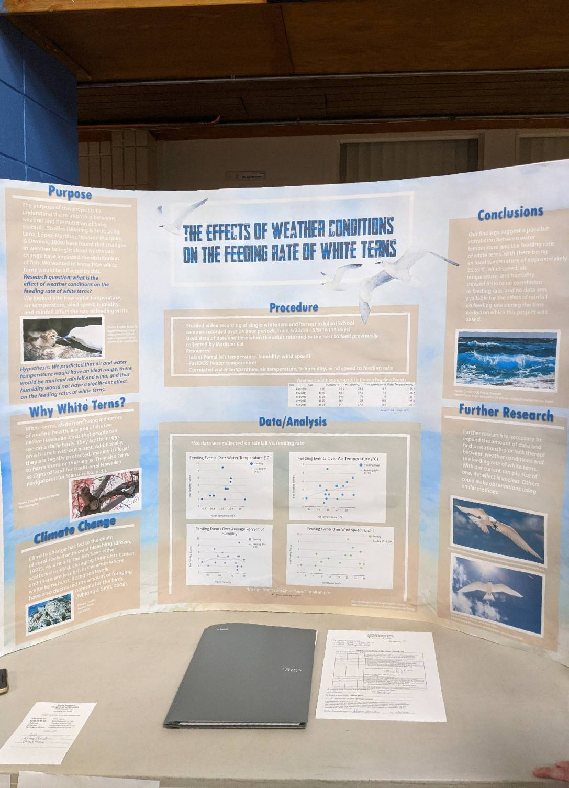

During the summer of 2019, I decided to get an intro to the world of research projects by starting one with a friend. After much deliberation, we finally found a topic: birds. That is, sea birds — the white terns that squawk loudly over the downtown skyline, their presence at odds with the heavy human activity all around. We would study the effects of environmental factors (e.g. temperature, humidity, and wind speed) on the birds’ feeding rate.
Together with my partner, we looked at data gained from cameras tracking a specific nest. We used this data, collected over several months, to find any trends or patterns in accordance to the weather conditions at the time. I also then helped to create the design of the final project board.
From this experience, I gained familiarity with working with large datasets and figuring out how to analyze them. We used R to find trends and how likely it was that they fit the data, giving me some exposure to the program. I also gained insight into graphic design for posters, and I learned through trial and error how to make a layout that was appealing to viewers but also readable.